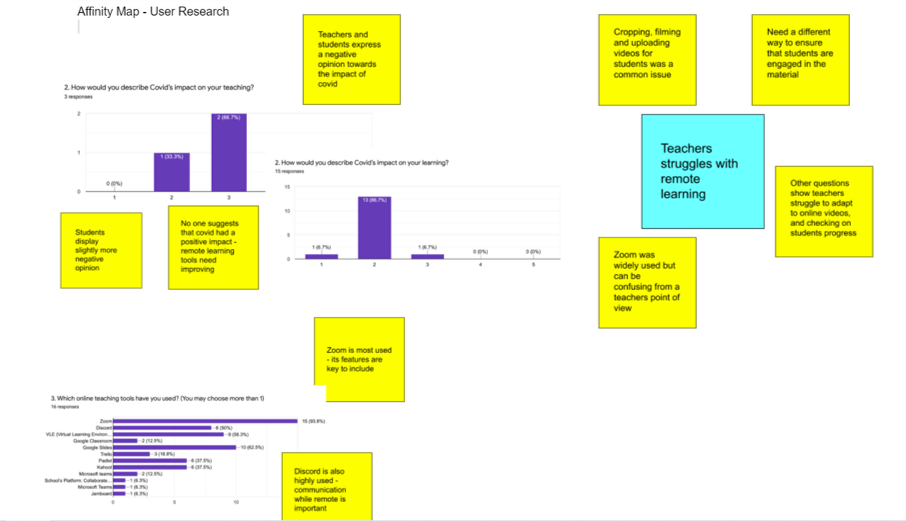
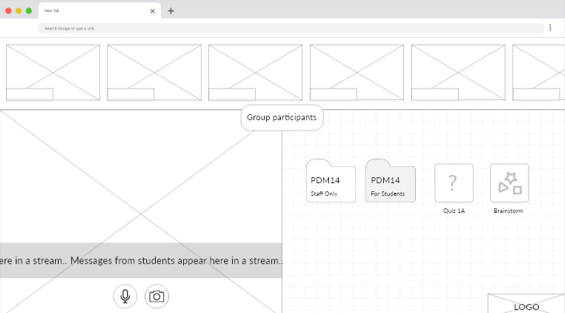
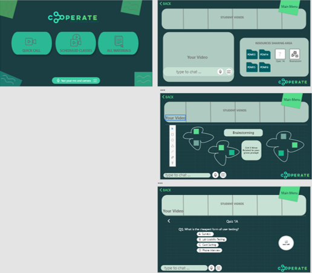

During my User Experience Design module, our first task was a group project. The brief was to design a new innovative way for remote learning to take place. This was our first experience of combining all of the design process skills we had learnt to create a high fidelity prototype in Adobe XD. This process started with our initial personas and a survey that we sent out to students and teachers as they were the most relevant people for the chosen brief. After collecting this data we analysed the trends and used this to create affinity maps which made looking at the trends easier. This then allowed us to inform our initial sketches and personas.


I was responsible for creating initial designs for our team logo along with a lot of the wireframing and then turning these into the final prototype. After we had done our first sketches, we turned them into these wireframes and completed some user research surrounding our product ideas. We then had to look at the colours we wanted to use to ensure we maintained a professional looking outcome, while making sure it was bold and eye-catching as stated in the brief. We thought that the dark teal and blue colours acheived this combination perfectly.
Then once we had completed our design process, we used Adobe XD to turn our advanced wireframes into the finished prototype. Using Adobe XD we were able to create all of the different screens required and also add transitions between them to give the impression of a fully functioning app. This was a great learning experience as it was the first group project we had completed at university so allowed me to combine my skills with other people's to come out with something really great in the end. I learnt a lot about teamwork and cooperation throughout this module and was then able to take these lessons forward into the next group project.
